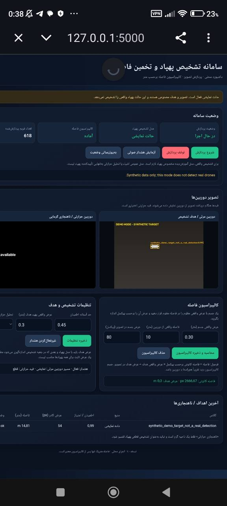

03 / PRIVATE PROJECT SHOWCASE
Object distance
A visual preview of my project interface, presented as part of my developer portfolio.
Demo only. For project security, the full contents, internal logic, technical details and operational features are intentionally withheld. This page displays the interface only and does not run the underlying project.

PORTFOLIO PREVIEW
The interface.
The full project stays private.
This showcase is limited to the visual appearance of the project. The source package and important project contents are not part of this public portfolio.
این صفحه صرفاً دموی ظاهری پروژه است. برای حفظ امنیت پروژه، محتویات کامل، منطق داخلی و بخشهای اصلی آن منتشر نشدهاند.